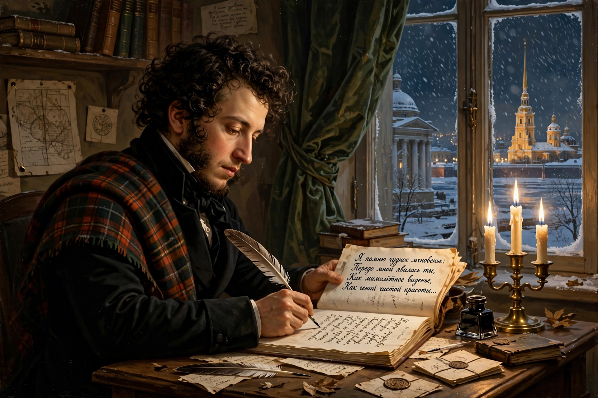

Russian poetry refers to the poetry of Russia and of the Russian language, from medieval epic and folk verse through the Golden Age of the 19th century, the Silver Age of modernism, and Soviet and post-Soviet verse. Poetry holds an exceptionally central place in Russian culture.

Old Russian literature included the epic The Tale of Igor's Campaign (12th century), byliny (heroic folk epics), spiritual verses and syllabic court poetry of the 17th century. In the 18th century Mikhail Lomonosov, Vasily Trediakovsky and Alexander Sumarokov reformed Russian versification toward syllabo-tonic metre, while Gavrila Derzhavin blended lofty odes with personal voice.
Alexander Pushkin (1799–1837) is regarded as the founder of modern Russian literature; his lyric poetry, verse novel Eugene Onegin and dramas set the standard for the language. Contemporaries included Vasily Zhukovsky, Yevgeny Baratynsky, and later Mikhail Lermontov, Fyodor Tyutchev, Afanasy Fet and Nikolay Nekrasov, whose civic verse addressed serfdom and social injustice.
Around 1900, Symbolists such as Alexander Blok, Andrei Bely and Valery Bryusov, Acmeists Anna Akhmatova and Osip Mandelstam, and Futurists Vladimir Mayakovsky and Velimir Khlebnikov revolutionised form and language.
Under Soviet censorship many poets suffered: Mandelstam died in a camp, Marina Tsvetaeva by suicide, Akhmatova was silenced. Later figures include Yevgeny Yevtushenko, Andrei Voznesensky, Bella Akhmadulina and Joseph Brodsky, who won the Nobel Prize in 1987 and wrote in both Russian and English.